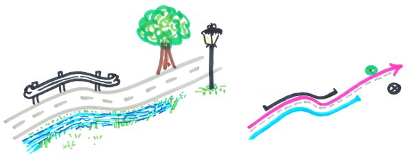

Managed objects#
The local authorities manage a lot of data based on the road network: roadworks, asphalt rehabilitation, road signs, hedge pruning, etc.
Each data object, point or (multi)linestring, is defined by its references calculated from the road network (see Concepts). They are stored in your own PostgreSQL tables, called managed objects. When the road graph is modified, these objects must be updated.

The managed objects layer#
The managed_objects layer lists all the PostgreSQL tables impacted by any graph modification,
with the update policy to apply to each of them:
| id | schema_name | table_name | geometry_type | update_policy_on_graph_change | add_trigger_on_geom_change |
|---|---|---|---|---|---|
| 1 | managed | demo_trees | POINT | references | True |
| 2 | managed | demo_safety_barriers | MULTILINESTRING | geometry | False |
schema_nameandtable_name: the business table,geometry_type: the geometry type of the table, e.g.POINTorMULTILINESTRING,update_policy_on_graph_change: the rule chosen by the administrator:references: the geometry is kept and the references are updated,geometry: the references are kept and the geometry is updated.
add_trigger_on_geom_change: ifTrue, the trigger calculating the references is created on this table by the functionroad_graph.add_managed_objects_triggers()(see below). Default:False.
Each table must have the reference columns corresponding to its geometry type.
They can be added automatically with the function road_graph.add_managed_object_reference_fields,
for one table or for all the tables of this layer (see Add the reference fields).
Add a business table#
To manage a new business table with the road graph:
- prepare the table, with its reference columns,
- register it in the
managed_objectslayer, - add the reference columns if needed,
- calculate the references of its features,
- optionally, calculate automatically the references of the features created or moved afterwards.
Prepare the table#
The table must have:
- a primary key,
- a geometry column
geom, in the same coordinate reference system as the road graph, of type Point for point objects, or LineString / MultiLineString for linear objects, - a text column
road_code, - the reference columns, which are calculated from the road graph:
| Geometry type | Required columns | Optional columns |
|---|---|---|
| Point | marker_code (integer), abscissa (real) |
cumulative (real), offset (real), side (text) |
| (Multi)LineString | start_marker_code (integer), start_abscissa (real), end_marker_code (integer), end_abscissa (real) |
start_cumulative, end_cumulative (real), offset (real), side (text) |
For example, for a table of trees:
1 2 3 4 5 6 7 8 9 10 11 | |
The reference columns can also be added automatically, once the table is created,
with the function road_graph.add_managed_object_reference_fields
(see Add the reference fields).
Then import your data into this table, for example with the QGIS tools
(drag and drop in the Browser panel, or the Processing algorithm
Export to PostgreSQL), or with SQL.
Register the table#
Add the table in the managed_objects layer (table road_graph.managed_objects),
with its schema name, table name, geometry type and update policy:
1 2 3 4 | |
Add the reference fields#
The function road_graph.add_managed_object_reference_fields adds to a table the reference columns
listed above, depending on its geometry type.
The geometry type is read from the managed_objects layer if the table is registered,
or else from its geometry column geom.
For example, for a table of road signs which does not have the reference columns yet:
1 2 3 4 5 6 7 8 | |
The function returns one line per column, with its status:
| field_name | field_type | field_status |
|---|---|---|
| road_code | text | added |
| marker_code | integer | added |
| abscissa | real | added |
| cumulative | real | added |
| offset | real | added |
| side | text | added |
- The existing columns are not modified: their status is
already exists, oralready exists with the type ...if their type is not the expected one. The function can therefore be run several times. - The optional columns (
cumulative,start_cumulative,end_cumulative,offsetandside) are not added if the third parameter isFalse:road_graph.add_managed_object_reference_fields('managed', 'road_signs', False). - If the columns cannot be added, the function returns one line with the status
table not found,geom column not foundorgeometry type not supported: ....
To add the reference columns to all the tables listed in the managed_objects layer:
1 2 3 4 | |
Tip
The column road_code is added empty. If it is still empty when the references are calculated,
the references are calculated on the closest road, and the column road_code is filled.
Fill it beforehand to force the road of a feature, for example at an intersection.
Calculate the references#
Once the features have been imported, calculate their references from their geometries
with the database function road_graph.update_table_references_from_geometries:
1 2 3 4 5 | |
The function parameters are the schema name, the table name, and an optional list of road codes. For each feature:
- if the column
road_codeis filled, the references are calculated on this road, - if it is empty, the closest road is used, and the column
road_codeis filled.
It returns the number of updated features and their ids, for example:
1 | |
If your data contain the references but no geometry, use instead the function
road_graph.update_table_geometries_from_references, with the same parameters,
to calculate the geometries from the references.
Automatic calculation of the references#
The trigger function road_graph.calculate_managed_object_references calculates the references
of a managed object feature each time it is inserted or its geometry is updated.
The table must be listed in road_graph.managed_objects, and have a road_code and a geom column.
The function road_graph.add_managed_objects_triggers() creates this trigger, named
trg_calculate_managed_object_references, on every table listed in road_graph.managed_objects
with the column add_trigger_on_geom_change set to True.
Run it after adding new tables in the managed objects layer, or after checking this column:
1 | |
It can be run several times: the trigger is only created when it does not already exist.
Unchecking add_trigger_on_geom_change does not remove an existing trigger.
The function returns one line per managed object, with its trigger status:
| schema_name | table_name | trigger_status |
|---|---|---|
| public | demo_painting | created |
| public | demo_trees | already exists |
| public | demo_nogeom | geom column not found |
| public | missing_table | table not found |
| public | demo_signs | not requested |
For each table, the created trigger is equivalent to:
1 2 3 4 | |
Update rules#
When the user merges the data from the editing session, every impacted object is automatically updated based on the rule chosen by the administrator:
- Point objects are often not moved, but their references must be updated, e.g. a road sign.
- (Multi)linestring objects must often follow the changes: the start and end points are kept and only the nodes in between are edited, e.g. a painting roadwork.
The algorithm Update managed objects from the road graph can also be run manually on a given layer,
with the following parameters:
Update policy:Update geometriesorUpdate references,Update geometries - Preserve start & end points when updating line geometries:NoorYes.
Example: impacts of a graph modification#
The road D613 has two business objects:
- a tree, in the table
demo_treeswith the update policyreferences, located atPR 43 + 450.53 m, - a safety barrier, in the table
demo_safety_barrierswith the update policygeometry, fromPR 43 + 120 mtoPR 45 + 18 m.
The road is realigned between the marker 43 and the tree: in an editing session, a vertex of the edge is moved 40 m away from the road axis. The edge, and therefore the road, becomes 46.71 m longer (from 563.30 m to 610.01 m).
When the editing session is merged, the two objects are updated according to their policy:
| Object | Update policy | Before the merge | After the merge |
|---|---|---|---|
| Tree | references |
PR 43 + 450.53 m |
PR 43 + 497.24 m: the tree has not moved, but it is now 46.71 m further from the marker 43 |
| Safety barrier | geometry |
PR 43 + 120 m to PR 45 + 18 m, 1,843.31 m long |
Same references. The geometry is calculated again and follows the new shape of the road: 1,889.57 m long |
- For the tree, a real object on the ground, the geometry is right and the references are updated.
- For the safety barrier, the references are kept: its start and end points stay at the same places, since the markers have not moved, and the geometry between them follows the realigned road.
The updated objects are listed in the column last_updated_objects_ids of the managed_objects layer,
and are displayed by the layer vm_managed_objects (see below).
Last updated objects#
The layer vm_managed_objects shows, for each managed table, the objects updated by the last merge
of an editing session, as a 10m buffer around them. It is useful to have a quick look at the impacted objects.
This layer is a materialized view based on the view road_graph.v_managed_objects,
which can be slow to compute. It is refreshed automatically at the end of the merge
of an editing session. To refresh it manually, for example after running the algorithm
Update managed objects from the road graph, use:
1 | |